A question that comes up often: when we say the ear “hears a frequency”, is that the frequency of a Fourier transform? Or is the ear closer to a short-time Fourier transform (STFT)? The short answer is that it is closer to an STFT, but with important differences.
一个常被问到的问题是：说人耳“听到某个频率”时，这个频率是傅里叶变换意义下的频率吗？还是说人耳更像短时傅里叶变换（STFT）？简短的回答是：更接近 STFT，但两者也有明显的不同。
The Fourier transform is defined for signals of infinite length, whereas the auditory system analyses sound in real time: the response at any moment depends mainly on the signal over a finite stretch of the recent past. In that respect the ear does resemble time–frequency methods such as the STFT. The cochlea, however, behaves more like a bank of band-pass filters. Their bandwidth varies with centre frequency, narrow at low frequencies and wide at high frequencies; the filtering is nonlinear, with gain and bandwidth changing with sound level; and below roughly 4–5 kHz the firing of the auditory nerve is synchronised to the phase of the sound wave, so the temporal structure of the waveform also reaches the brain.
傅里叶变换针对的是无限长的信号，而听觉系统对声音的分析是实时进行的，任何时刻的听觉响应主要取决于此前一段有限时间内的信号。从这一点看，人耳确实更接近短时傅里叶变换（STFT）这类时频分析方法。不过，耳蜗的工作方式更像一组带通滤波器：滤波器的带宽随中心频率变化，低频窄、高频宽；滤波过程是非线性的，增益和带宽都随声级改变；此外，在大约 4–5 kHz 以下，听神经的放电与声波的相位同步，波形的时间结构也被传到了大脑。
The “frequency” the ear hears can therefore be understood on two levels. The first is place: sounds of different frequency produce maximal vibration at different positions along the basilar membrane, and the brain infers the frequency content from which nerve fibres are active. This is close to the spectrum given by a filter bank or an STFT. The second is time: the intervals between auditory-nerve spikes reflect the period of the sound wave. The pitch we perceive is a psychological quantity that the brain derives by combining both kinds of information, and it can even correspond to a frequency that is absent from the spectrum.
因此，人耳所听到的频率可以从两个层面理解。一是位置：不同频率的声音使基底膜上不同位置的振动最强，大脑根据哪些神经纤维被激活来判断声音含有哪些频率成分，这与滤波器组或 STFT 给出的频谱相近。二是时间：听神经放电的时间间隔反映了声波的周期。我们感知到的音高（pitch）是大脑综合这两类信息得到的心理量，它甚至可以对应频谱中并不存在的频率。
1. Outer and middle ear一、外耳与中耳
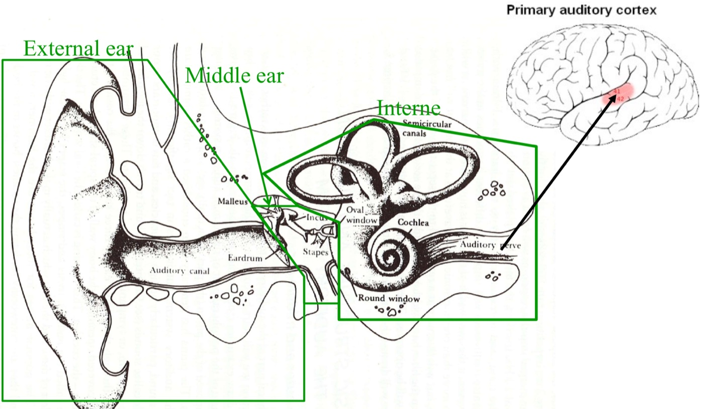
Sound travels through the pinna and ear canal to the eardrum. The eardrum’s vibration is passed by the three ossicles — malleus, incus and stapes — to the oval window, and into the fluid-filled cochlea.
声波经耳廓和外耳道到达鼓膜，鼓膜的振动经锤骨、砧骨和镫骨三块听小骨传到卵圆窗，再进入充满淋巴液的耳蜗。
The ear canal is about 2.5 cm long and can be approximated as a tube closed at one end. Its quarter-wavelength resonance, c/4L ≈ 3.4 kHz, is one reason the ear is most sensitive around 3–4 kHz. Reflection and diffraction by the head and pinna also cause spectral changes that depend on the direction of the source; these are described by the head-related transfer function (HRTF).
外耳道长约 2.5 cm，可以近似看作一端封闭的管，其四分之一波长共振频率约为 c/4L ≈ 3.4 kHz，这是人耳在 3–4 kHz 最灵敏的原因之一。头部和耳廓对声波的反射与衍射还会引起随声源方向变化的频谱改变，这种变化用头相关传递函数（HRTF）描述。
The main job of the middle ear is impedance matching. The characteristic impedance of air is about 420 N·s/m³, that of the inner-ear fluid about 2×10⁶ N·s/m³; sound passing directly from air into fluid would be almost entirely reflected. The eardrum’s area is about 20 times that of the oval window and the ossicular lever ratio is about 1.3; together they boost the pressure by a theoretical factor of about 26 (roughly 28 dB).
中耳的主要作用是阻抗匹配。空气的特性阻抗约为 420 N·s/m³，内耳淋巴液约为 2×10⁶ N·s/m³，声波直接从空气进入液体时，绝大部分能量会被反射。鼓膜面积约为卵圆窗的 20 倍，听骨链的杠杆比约为 1.3，两者合起来在理论上把声压放大约 26 倍（约 28 dB）。
Over the usual range of levels, the outer and middle ear can be treated as linear time-invariant filters. They shape the spectrum reaching the inner ear but do not decompose it into frequencies; the frequency analysis happens in the cochlea.
在一般声级范围内，外耳和中耳可以看作线性时不变的滤波器。它们改变到达内耳的声音频谱，但不对声音做频率分解，频率分析发生在耳蜗中。
2. The cochlea and basilar membrane二、耳蜗与基底膜
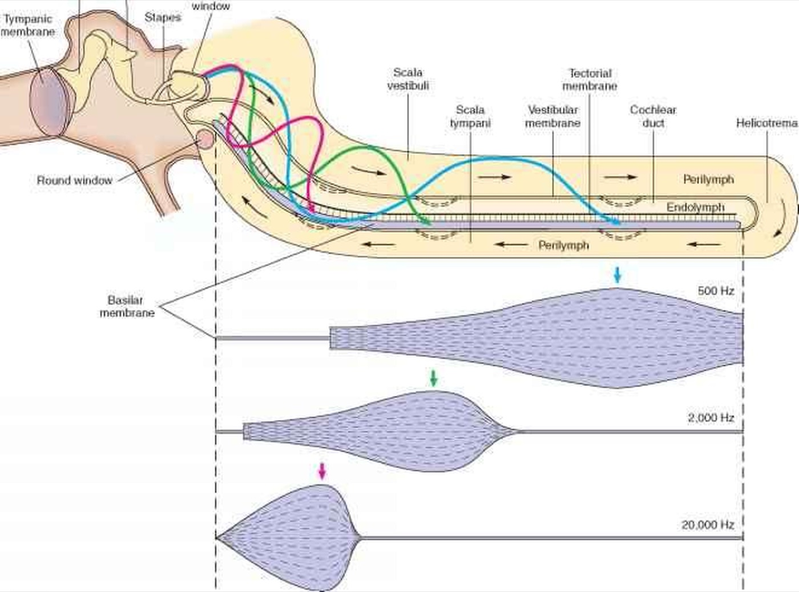
The human cochlea coils about two and a half turns and is roughly 3.5–4 cm long when unrolled. The basilar membrane inside it becomes wider and more compliant from the base (near the oval window) to the apex. When the stapes pushes on the oval window, a travelling wave runs along the basilar membrane from base to apex; its amplitude grows, peaks at a certain place and then dies away rapidly. The higher the frequency, the closer the peak is to the base; low-frequency waves travel almost to the apex. Georg von Békésy received the 1961 Nobel Prize in Physiology or Medicine for his work on the cochlear travelling wave. This mapping between frequency and position is called tonotopy.
人的耳蜗盘绕约两圈半，展开后长约 3.5–4 cm。耳蜗内的基底膜从基部（靠近卵圆窗）到顶部逐渐变宽、变软。镫骨推动卵圆窗时，基底膜上会产生一个由基部向顶部传播的行波，振幅逐渐增大，在某一位置达到最大后迅速衰减。频率越高，最大振幅出现的位置越靠近基部；低频声的行波则一直传到顶部附近。von Békésy 因对耳蜗行波的研究获得 1961 年诺贝尔生理学或医学奖。频率与基底膜位置之间的这种对应关系称为音调拓扑（tonotopy）。
Each point on the basilar membrane can therefore be seen as a band-pass filter; the frequency to which it is most sensitive is its characteristic frequency (CF). The whole membrane is a bank of overlapping filters whose centre frequencies vary continuously.
因此，基底膜上的每一点都可以看作一个带通滤波器，它最敏感的频率称为特征频率（characteristic frequency，CF）。整条基底膜相当于一组中心频率连续变化、通带相互重叠的滤波器。
The cochlea is a causal physical system. Each filter rings for only a finite time after excitation; the duration of its impulse response is roughly inversely proportional to its bandwidth B, of order 1/B. That duration sets the time resolution at that frequency and plays the role of the STFT window length. Because auditory-filter bandwidth varies strongly with frequency, so does this equivalent window.
耳蜗是因果的物理系统。每个滤波器受到激励后只振荡有限的时间，冲激响应的持续时间与带宽 B 大致成反比，量级约为 1/B。这个持续时间决定了该频率处的时间分辨率，作用相当于 STFT 的窗长。听觉滤波器的带宽随频率变化很大，这个等效窗长也随之变化。
3. Hair cells三、毛细胞
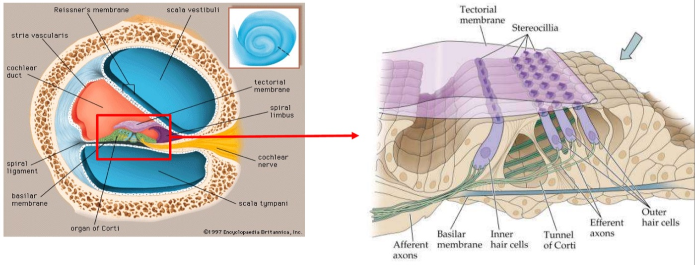
The organ of Corti, which sits on the basilar membrane, contains two kinds of hair cell: about 3,500 inner hair cells (IHCs) in a single row and about 12,500 outer hair cells (OHCs) in three rows.
基底膜上的柯蒂氏器（organ of Corti）中有两类毛细胞：约 3500 个内毛细胞（IHC）排成一排，约 12500 个外毛细胞（OHC）排成三排。
Inner hair cells are the sensory receptors. Vibration of the basilar membrane deflects the stereocilia, opening and closing ion channels; mechanical vibration is thus converted into an electrical signal and passed across a synapse to the auditory nerve. About 90–95 % of afferent auditory-nerve fibres connect to inner hair cells.
内毛细胞是听觉的感受器。基底膜振动使毛细胞顶端的静纤毛偏转，离子通道随之开闭，机械振动由此转换为电信号，再经突触传给听神经。约 90%–95% 的听神经传入纤维与内毛细胞相连。
Outer hair cells act mainly as amplifiers. They lengthen and shorten as their membrane potential changes (electromotility), feeding force back onto the basilar membrane. This raises the gain at low levels by several tens of decibels and sharpens the tuning. The amplification weakens as level rises, so it is nonlinear.
外毛细胞的主要作用是放大。它们能随膜电位的变化伸长或缩短（电致运动），反过来对基底膜施加力，使低声级时的振动增益提高几十分贝，同时使调谐变得更尖锐。这种放大作用随声级增大而减弱，因此是非线性的。
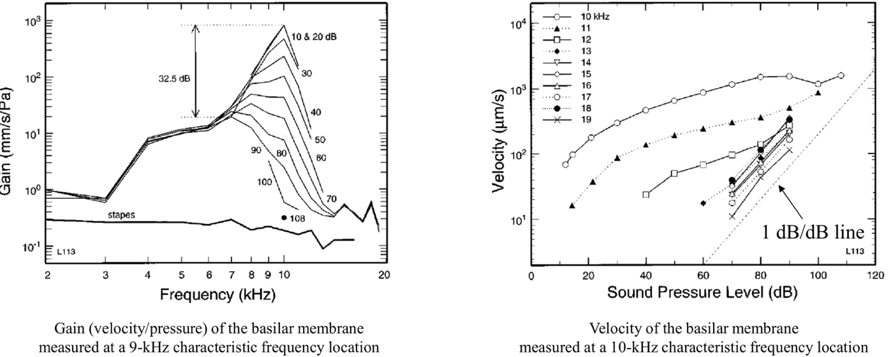
Figure 4 shows basilar-membrane responses measured by Ruggero and colleagues in living chinchillas. On the left, at low levels (10–20 dB SPL) the gain curve has a tall, narrow peak near the CF; as level rises, the peak gain falls, the peak broadens and shifts towards lower frequencies — the figure marks a difference of about 32.5 dB between low- and high-level peak gain. Well below the CF (4–6 kHz) the curves for different levels essentially coincide, showing that the response there is linear. On the right, at the CF the velocity grows much more slowly than 1 dB/dB — a compressive growth — while for stimuli above the CF the growth is close to linear.
图 4 是 Ruggero 等人在活体栗鼠耳蜗上测得的基底膜响应。左图中，声级较低（10–20 dB SPL）时，增益曲线在特征频率附近有一个高而窄的峰；声级升高后，峰值增益下降，峰变宽，峰值频率向低频移动，图中标出低声级与高声级下的峰值增益相差约 32.5 dB。在远低于特征频率的区域（4–6 kHz），不同声级的曲线基本重合，说明那里的响应是线性的。右图中，在特征频率处，基底膜振速随声级的增长远小于 1 dB/dB，即压缩性增长；对于高于特征频率的刺激，增长接近线性。
When the outer hair cells are temporarily suppressed by drugs, or damaged by noise or ototoxic drugs, both the compression and the sharp tuning disappear. OHC damage is a common cause of sensorineural hearing loss: besides raised thresholds, patients lose frequency selectivity. The active process of the OHCs also makes the inner ear emit faint sounds — otoacoustic emissions (OAEs) — which are used in newborn hearing screening.
用药物暂时抑制外毛细胞，或外毛细胞因噪声、耳毒性药物等原因受损时，这种压缩和尖锐的调谐都会消失。外毛细胞损伤是感音神经性听力损失的常见原因，患者除了听阈升高，频率选择性也会下降。外毛细胞的主动过程还会使内耳向外发出微弱的声音，即耳声发射（OAE），新生儿听力筛查就利用了这一现象。
This is unlike an STFT: the STFT is a linear operation, whereas both the gain and the bandwidth of cochlear filters change with level.
这与 STFT 不同：STFT 是线性运算，而耳蜗滤波器的增益和带宽都随声级变化。
4. The auditory nerve四、听神经
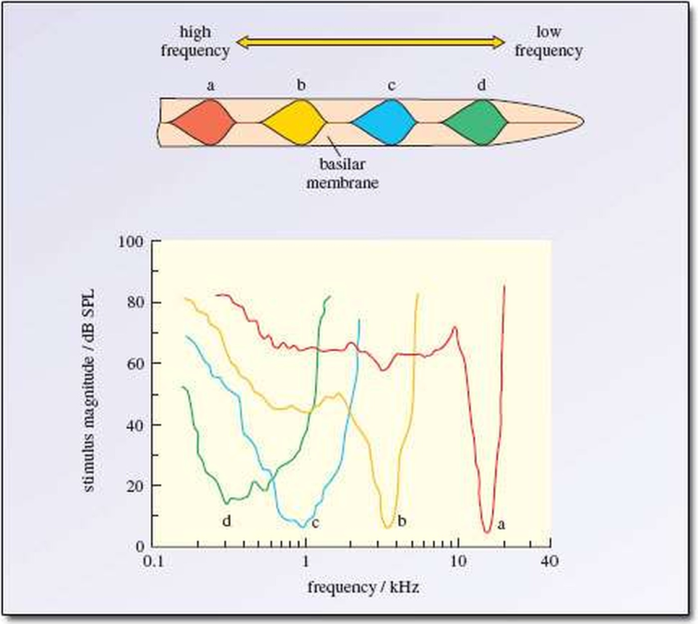
Record from a single auditory-nerve fibre, vary the frequency and level of a pure tone, and find at each frequency the lowest level that raises the firing rate clearly above the spontaneous rate: the result is the fibre’s tuning curve. Every fibre has a most sensitive frequency — its CF — and the tuning curve is V-shaped, steeper on the high-frequency side. Fibres with different CFs are arranged in order, and this tonotopic organisation is preserved all the way to the auditory cortex. Representing frequency by which fibres are active is called place coding.
在单根听神经纤维上记录放电，改变纯音的频率和声级，找出各频率下使放电率明显高于自发放电率的最低声级，就得到这根纤维的调谐曲线。每根纤维都有一个最敏感的频率，即特征频率；调谐曲线呈 V 形，高频一侧比低频一侧更陡。不同特征频率的纤维有序排列，这种音调拓扑结构一直保持到听觉皮层。用哪些纤维被激活来表示频率，称为位置编码（place coding）。
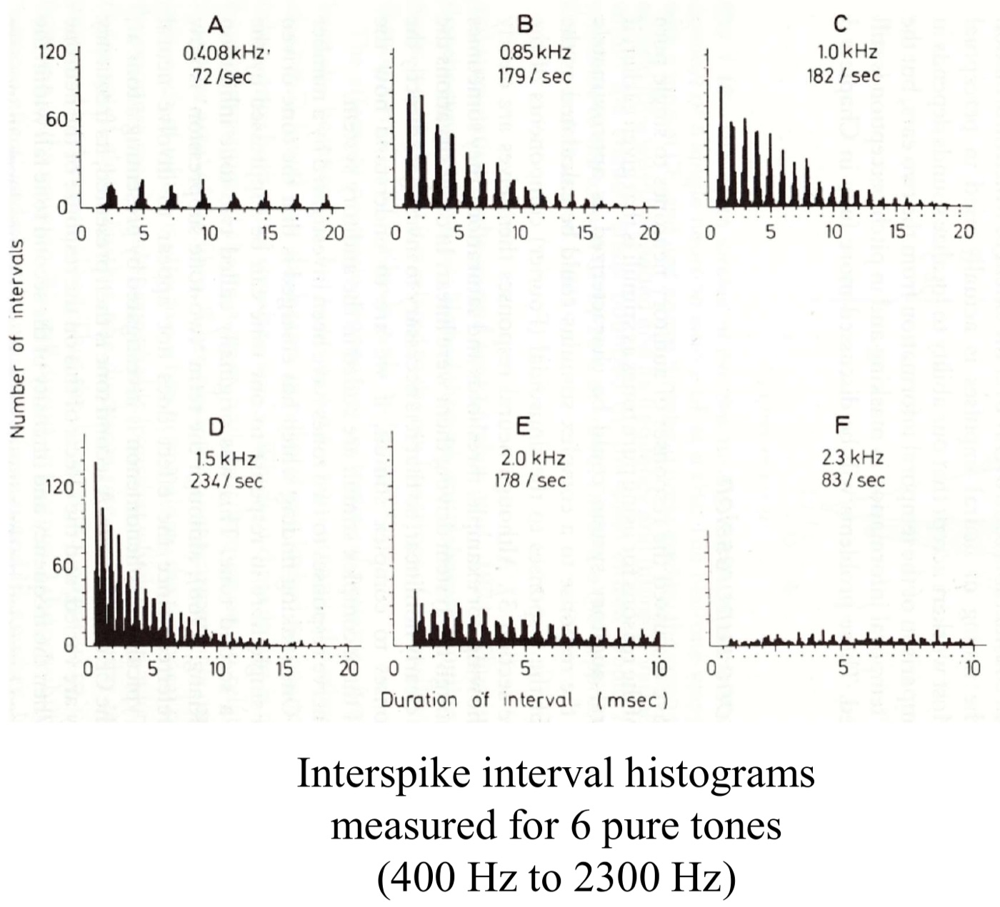
The auditory nerve carries more than firing rate. Below about 4–5 kHz, spikes tend to occur at a particular phase of the stimulus waveform — a phenomenon called phase locking. In Figure 6 the intervals cluster at integer multiples of the stimulus period: for a 1 kHz tone, at 1 ms, 2 ms, 3 ms and so on. A fibre does not necessarily fire on every cycle, but when it fires is tied to the phase of the waveform. The 4–5 kHz upper limit comes from animal experiments; the limit of phase locking in the human auditory nerve is still debated.
听神经传递的信息不只是放电率。在约 4–5 kHz 以下，听神经的放电倾向于发生在刺激波形的特定相位上，这一现象称为锁相（phase locking）。图 6 中，放电间隔集中在刺激周期的整数倍处，例如 1 kHz 纯音对应 1 ms、2 ms、3 ms……。一根纤维不一定在每个周期都放电，但放电的时刻与波形的相位有关。4–5 kHz 这一上限来自动物实验，人类听神经锁相的上限目前仍有争议。
A spectrogram usually shows only the STFT magnitude and discards the phase. The auditory nerve, in contrast, preserves the temporal fine structure (TFS) of the waveform at low frequencies — in effect, it also sends the phase to the brain.
语谱图通常只显示 STFT 的幅度，相位被丢弃了。听神经则在低频保留了波形的时间精细结构（temporal fine structure），相当于把相位信息也传给了大脑。
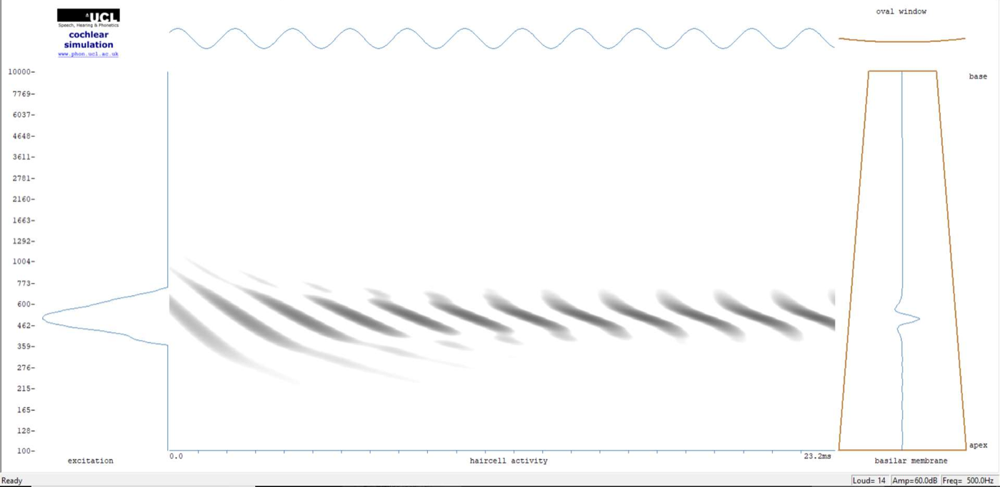
The centre panel of Figure 7 can be read as the time–frequency representation produced by the cochlea. Hair-cell activity is concentrated in channels near the 500 Hz CF, and the time-averaged excitation pattern on the left reflects place coding. Activity recurs once per cycle (2 ms), reflecting phase locking. The stripes are slanted — lower-CF channels respond later — because the travelling wave takes time to move from base to apex. An ordinary spectrogram contains only the first of these three kinds of information.
图 7 中间部分可以看作耳蜗输出的时频表示。毛细胞的活动集中在特征频率 500 Hz 附近的通道，左侧时间平均后的激励模式反映的是位置编码。活动每个周期（2 ms）出现一次，反映的是锁相。条纹是倾斜的，特征频率越低的通道响应越晚，这是行波从基部传到顶部需要时间造成的。普通语谱图只包含其中第一种信息。
5. Auditory filters and critical bands五、听觉滤波器与临界频带
Most of the physiological data above come from animals. For humans, the properties of auditory filters can be measured psychoacoustically, through listening experiments.
上面的生理数据大多来自动物实验。对于人耳，可以用心理声学的听音实验来测量听觉滤波器的特性。
The classic method is Fletcher’s (1940) band-widening experiment: a 2 kHz tone is presented with band-pass noise centred on 2 kHz; keeping the noise spectral density constant, the noise bandwidth is gradually increased and the detection threshold of the tone is measured.
经典的方法是 Fletcher（1940）的带宽扩展实验：在 2 kHz 纯音上叠加以 2 kHz 为中心的带通噪声，保持噪声的功率谱密度不变，逐渐增大噪声带宽，测量纯音的检测阈。
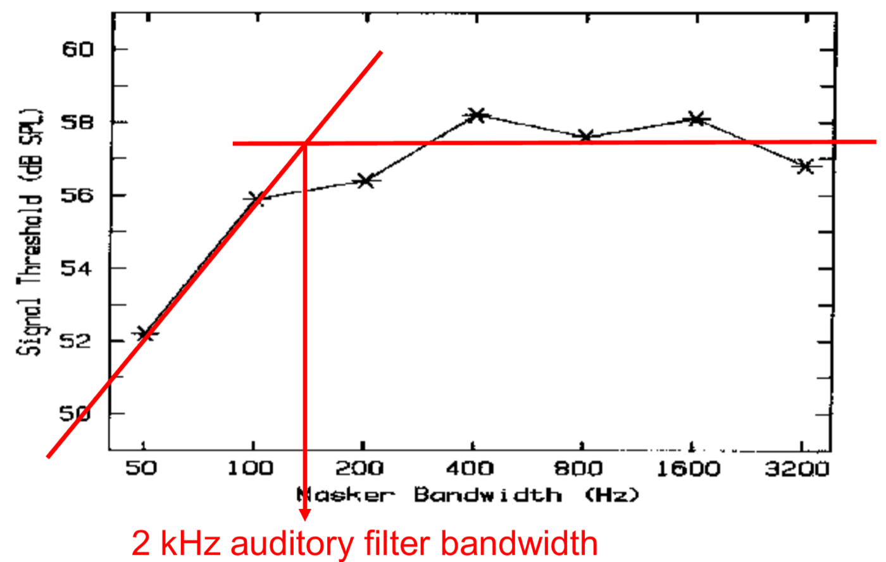
While the noise band is narrow, the threshold rises as the bandwidth increases; beyond a certain bandwidth, it hardly changes. The reason is that to detect the tone, the listener uses the output of the auditory filter centred near the tone, and only noise within that filter’s passband contributes to masking. The noise bandwidth at which the threshold stops rising is called the critical bandwidth.
噪声带宽较窄时，检测阈随带宽增大而升高；带宽超过某一数值后，检测阈基本不再变化。原因是检测纯音时，听者利用的是中心频率在纯音附近的那个听觉滤波器的输出，只有落在该滤波器通带内的噪声才起掩蔽作用。检测阈停止上升时的噪声带宽称为临界带宽（critical bandwidth）。
The same principle explains simultaneous masking: whether one sound is masked by another depends mainly on their relative energy within the same auditory filter. Lossy audio codecs such as MP3 exploit this. The encoder estimates each frame’s spectrum with a short-time FFT, computes masking thresholds per critical band, and then discards or coarsely quantises the masked components.
同一原理也可以解释同时掩蔽：一个声音能否被另一个声音掩蔽，主要取决于两者在同一个听觉滤波器内的相对能量。MP3 等有损音频编码利用了这一点，编码器用短时 FFT 估计每一帧的频谱，按临界频带计算掩蔽阈，再舍弃或粗略量化被掩蔽的成分。
Repeating such experiments at different centre frequencies shows how auditory-filter bandwidth varies with frequency (Figure 10). Two descriptions are common. Zwicker’s critical band (CB) is roughly constant at about 100 Hz below 500 Hz and about 20 % of the centre frequency above 500 Hz. The audible range can be divided into about 24 critical bands — the Bark scale — half of which lie below about 1.7 kHz. Glasberg and Moore’s equivalent rectangular bandwidth is ERB = 24.7 × (4.37f + 1) Hz with f in kHz, about 35 Hz, 132 Hz and 1100 Hz at 100 Hz, 1 kHz and 10 kHz respectively.
在不同中心频率上进行类似实验，可以得到听觉滤波器带宽随频率的变化（图 10）。常用的描述有两种。Zwicker 的临界频带（CB）在 500 Hz 以下约为 100 Hz，基本不变；500 Hz 以上约为中心频率的 20%。可听频率范围大约可以划分为 24 个临界频带，对应 Bark 刻度，其中一半位于约 1.7 kHz 以下。Glasberg 和 Moore 的等效矩形带宽（ERB）为 ERB = 24.7 × (4.37f + 1) Hz（f 的单位为 kHz），在 100 Hz、1 kHz 和 10 kHz 处分别约为 35 Hz、132 Hz 和 1100 Hz。
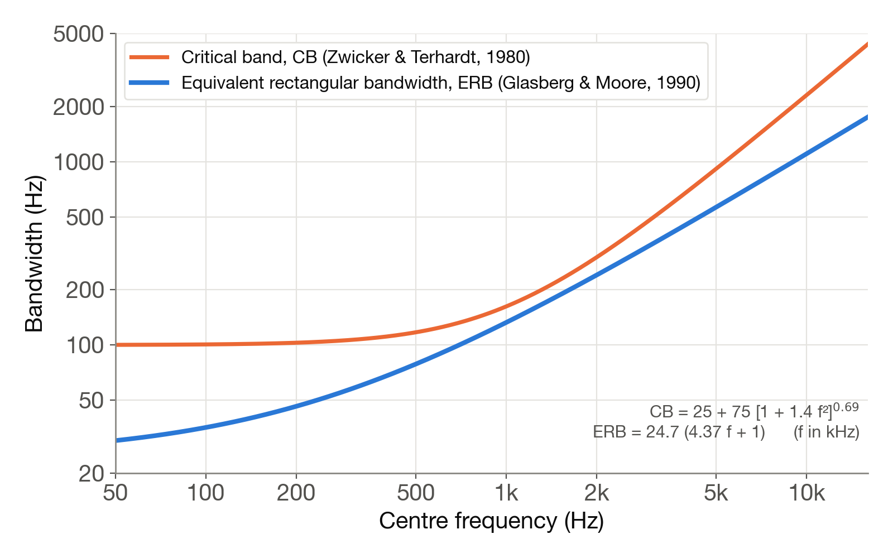
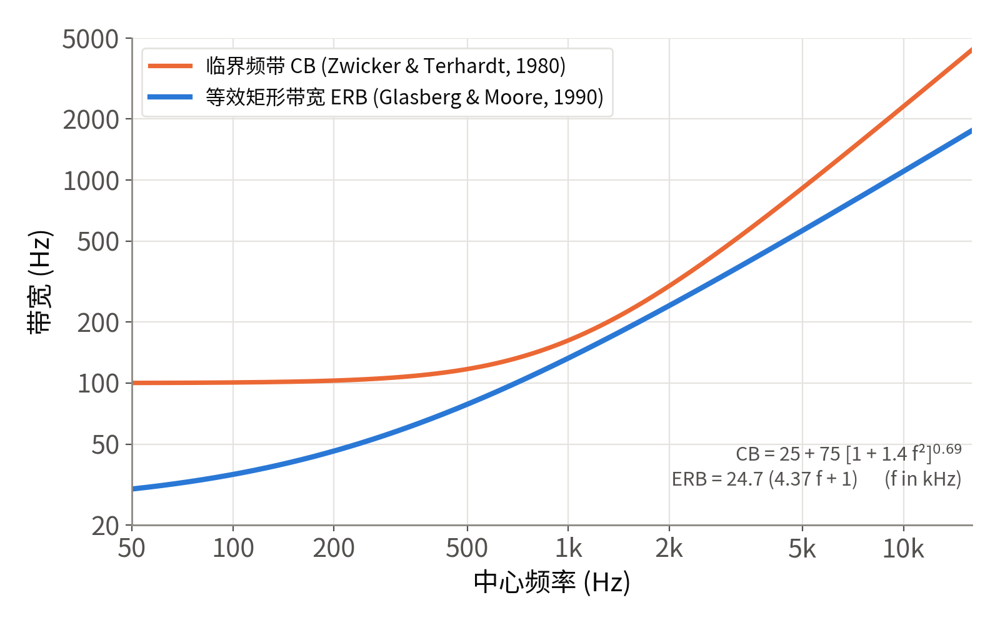
Now imagine adding the STFT and the constant-Q transform to this plot. The STFT has a fixed window and therefore the same bandwidth at every frequency — a horizontal line. The constant-Q transform (and, similarly, the wavelet transform) has bandwidth proportional to frequency — a line of slope 1 on log–log axes. Auditory-filter bandwidth changes slowly at low frequencies, like the STFT, and is roughly proportional to frequency at high frequencies (in ERB terms, Q ≈ 8–9), like a constant-Q transform. Figure 11a puts all three together.
如果把 STFT 和常数 Q 变换也画在这张图上：STFT 的窗长固定，各频率的带宽相同，是一条水平线；常数 Q 变换（小波变换与之类似）的带宽与频率成正比，在双对数坐标中是一条斜率为 1 的直线。听觉滤波器的带宽在低频段变化缓慢，与 STFT 接近；在高频段大致与频率成正比（按 ERB 计，Q 值约为 8–9），与常数 Q 变换接近。图 11a 把三者画在了一起。
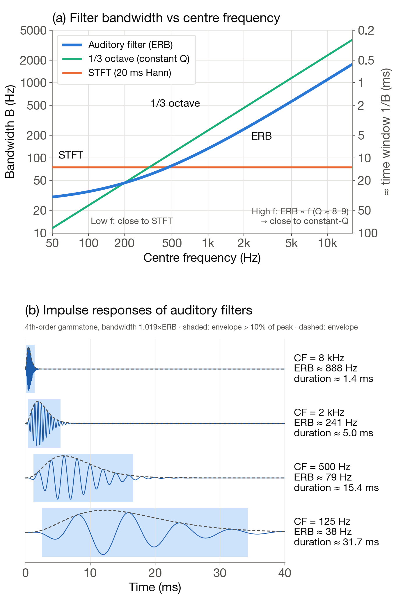
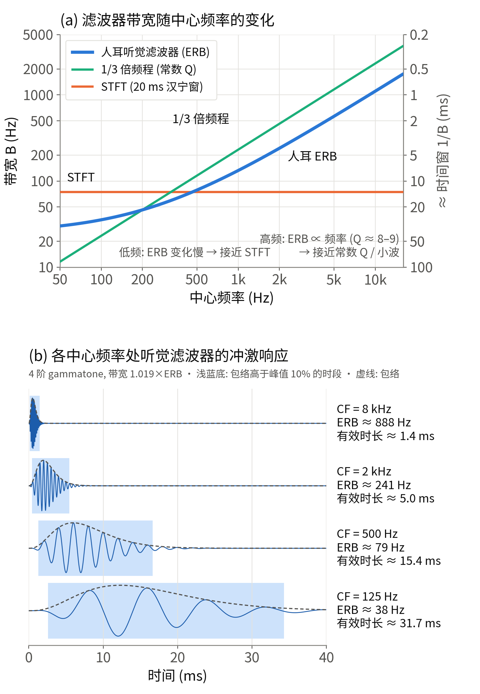
Gammatone filters designed on the ERB scale are a widely used model of the auditory filter. Figure 11b shows impulse responses at several centre frequencies. The time during which the envelope exceeds 10 % of its peak is about 32 ms at 125 Hz, 15 ms at 500 Hz, 5 ms at 2 kHz and 1.4 ms at 8 kHz. Low-frequency filters are narrow, with good frequency resolution but long responses and poor time resolution; high-frequency filters are the opposite. This is the time–frequency uncertainty relation at work in the cochlea.
按 ERB 设计的 gammatone 滤波器是常用的听觉滤波器模型。图 11b 给出了几个中心频率处的冲激响应，包络高于峰值 10% 的时段在 125 Hz 处约为 32 ms，500 Hz 处约为 15 ms，2 kHz 处约为 5 ms，8 kHz 处约为 1.4 ms。低频滤波器带宽窄，频率分辨率高，但响应持续时间长，时间分辨率低；高频滤波器正好相反。这是时频不确定性关系在耳蜗中的体现。
6. Temporal resolution六、时间分辨率
The impulse response of the auditory filter is only one of the factors that set temporal resolution. At higher stages of processing, the auditory system also integrates the signal over longer time spans.
听觉滤波器的冲激响应只是决定时间分辨率的因素之一。在更高的处理阶段，听觉系统还会在更长的时间范围内对信号进行积分。
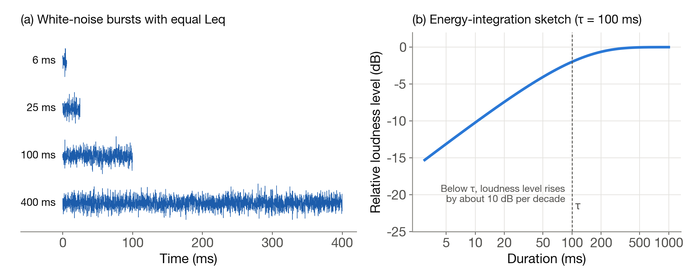
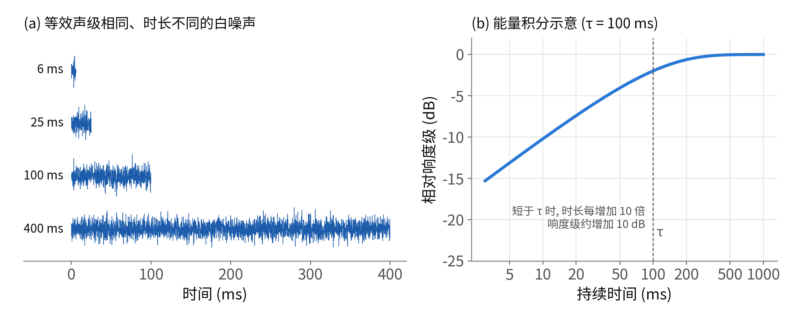
Temporal integration of loudness is one example. White-noise bursts with the same equivalent level sound louder and louder as their duration increases from 6 ms to 400 ms, levelling off after 100–200 ms. Loudness judgements thus seem to be based on the energy accumulated over roughly 100–200 ms.
响度的时间积分是一个例子。等效声级相同的白噪声，持续时间从 6 ms 增加到 400 ms 时，听起来越来越响，到 100–200 ms 后基本不变。这说明响度判断大约基于 100–200 ms 内累积的能量。
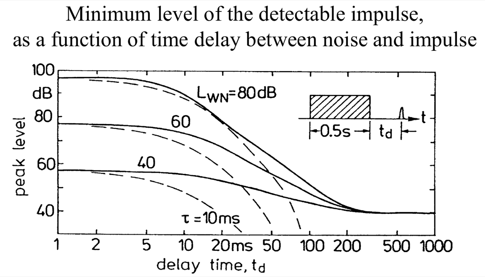
Forward masking is another. After an intense noise ends, a short impulse that follows needs a higher level than usual to be heard, and the effect takes 100–200 ms to fade. The measured thresholds decay much more slowly than an exponential with a 10 ms time constant, and the decay depends on the level of the masker — another nonlinearity.
前向掩蔽是另一个例子。一段强噪声结束后，紧随其后的短脉冲需要比平时更高的声级才能被听到，这种影响要经过 100–200 ms 才基本消失。实测的阈值曲线比时间常数为 10 ms 的指数衰减慢得多，而且衰减过程与掩蔽噪声的声级有关，这也是一种非线性。
In other tasks the ear’s temporal resolution is very fine. For example, a silent gap of 2–3 ms in broadband noise can be detected.
在另一些任务中，听觉的时间分辨率很高。例如，宽带噪声中 2–3 ms 的无声间隙就能被察觉。
So the ear has no single window length. Auditory-filter responses last tens of milliseconds at low frequencies and 1–2 ms at high frequencies; envelope and gap detection work on time scales of a few milliseconds; loudness integration and forward masking on 100–200 ms. Time-varying loudness models (such as ISO 532-1 method B and ISO 532-3) add smoothing with different time constants after the auditory filter bank to reproduce these effects.
因此，人耳没有统一的窗长。听觉滤波器的响应时间在低频为几十毫秒，在高频为 1–2 ms；包络和间隙检测的时间尺度为几毫秒；响度积分和前向掩蔽的时间尺度为 100–200 ms。时变响度模型（如 ISO 532-1 方法 B 和 ISO 532-3）在听觉滤波器组之后加入不同时间常数的平滑，用来模拟这些现象。
7. Pitch七、音高
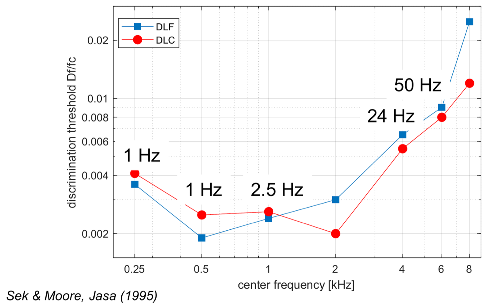
The frequency difference limen (DLF) is the smallest detectable change in frequency. Around 500 Hz the DLF is about 1 Hz (about 0.2 %), while the auditory-filter bandwidth there is about 80 Hz — nearly two orders of magnitude larger.
频率辨别阈（DLF）是能察觉的最小频率变化。在 500 Hz 附近，DLF 约为 1 Hz（约 0.2%），而该频率处听觉滤波器的带宽约为 80 Hz，两者相差近两个数量级。
This mirrors the distinction in the STFT between frequency resolution and frequency estimation accuracy. Resolving two closely spaced sinusoids requires a long window; but estimating the frequency of a single sinusoid can exploit how its phase evolves over time, giving a precision far finer than the bin spacing — this is what a phase vocoder does. The auditory system is generally thought to achieve fine frequency discrimination mainly through the temporal information provided by phase locking. Supporting evidence: the DLF rises sharply above 4 kHz (right-hand end of Figure 14), exactly where phase locking fades. Musical pitch also lies essentially below 4–5 kHz; the highest note on a piano is about 4186 Hz.
这与 STFT 中频率分辨率和频率估计精度的区别类似。分辨两个频率相近的正弦信号需要较长的窗；而估计单个正弦信号的频率时，可以利用相位随时间的变化，精度可以远高于频率分辨间隔，相位声码器就采用这种方法。一般认为，听觉系统主要借助锁相提供的时间信息来实现精细的频率辨别。支持这一观点的证据是，DLF 在 4 kHz 以上明显增大（图 14 右端），而锁相正是在这一频率范围逐渐消失。音乐中使用的音高也基本在 4–5 kHz 以下，钢琴最高音的频率约为 4186 Hz。
The missing-fundamental phenomenon also supports temporal theories. Add pure tones at 800, 1000 and 1200 Hz: the spectrum contains no 200 Hz component, yet the perceived pitch is 200 Hz. In the temporal account, the three components fall into different auditory filters and each produces phase-locked firing, with intervals at integer multiples of 1.25 ms, 1 ms and about 0.83 ms respectively; the interval common to all three is 5 ms, corresponding to 200 Hz. This is also why we can still hear the pitch of a male voice over a telephone line that removes everything below 300 Hz.
缺失基频现象也支持时间理论。800、1000 和 1200 Hz 三个纯音叠加后，频谱中没有 200 Hz 的成分，但听到的音高是 200 Hz。按照时间理论的解释，三个分量分别落在不同的听觉滤波器中，各自产生锁相放电，放电间隔分别是 1.25 ms、1 ms 和约 0.83 ms 的整数倍，三者共同的间隔是 5 ms，对应 200 Hz。电话线路滤除了 300 Hz 以下的频率，但人们仍能听出男声的音高，原因也在于此。
Pitch, then, is neither a single component of the Fourier transform nor a single bin of the STFT; it is estimated by the brain from the periodicity of the outputs of many auditory filters. Licklider’s (1951) duplex theory and Meddis and Hewitt’s (1991) autocorrelation model both describe pitch extraction as autocorrelation within each frequency channel, followed by pooling across channels.
因此，音高既不是傅里叶变换中的某一个频率分量，也不是 STFT 的某一个频点，而是大脑根据各听觉滤波器输出的周期性估计出来的。Licklider（1951）提出的二重理论和 Meddis 与 Hewitt（1991）的自相关模型，都把音高的提取描述为在各个频率通道内做自相关，再把各通道的结果汇总。
8. Beats, fluctuation and roughness八、拍、起伏度与粗糙度
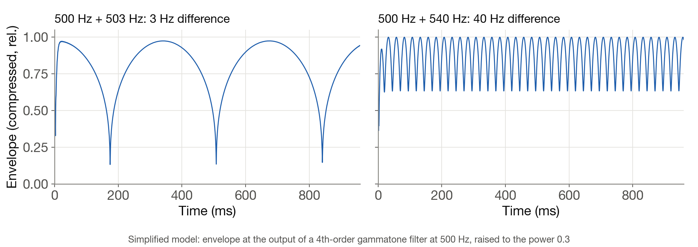
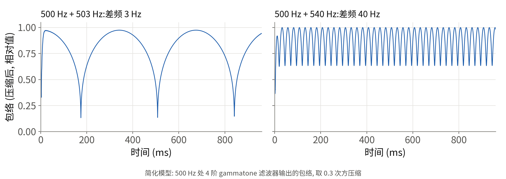
Two pure tones close enough in frequency to fall in the same auditory filter are not heard as two tones but as one tone whose loudness waxes and wanes at a rate equal to their frequency difference. 500 Hz and 503 Hz together sound like a single tone of about 501.5 Hz whose loudness rises and falls three times a second. Increase the difference to 40 Hz (500 Hz and 540 Hz) and the fluctuations become too fast to follow individually; the sound becomes rough. Only once the difference exceeds the critical bandwidth do the two tones fall into different auditory filters and are heard as two separate tones.
两个频率相近、落在同一个听觉滤波器内的纯音不能被分辨为两个音，听到的是一个响度随时间起伏的音，起伏的频率等于两者的频率差。500 Hz 与 503 Hz 的纯音叠加，听到的是一个约 501.5 Hz 的音，响度每秒起伏 3 次。频率差增大到 40 Hz（500 Hz 与 540 Hz）时，响度起伏快到无法逐次分辨，听感变得粗糙。频率差超过临界带宽后，两个纯音进入不同的听觉滤波器，才被听成两个独立的音。
Psychoacoustics describes the first sensation with fluctuation strength (unit: vacil), which is greatest at a modulation frequency of about 4 Hz, and the second with roughness (unit: asper), which for a 1 kHz carrier peaks at modulation frequencies of 30–70 Hz. Both metrics are widely used in sound-quality evaluation of cars, electric motors and other products.
心理声学用起伏度（fluctuation strength，单位 vacil）描述前一种感觉，它在调制频率约 4 Hz 时最强；用粗糙度（roughness，单位 asper）描述后一种感觉，对 1 kHz 载波，调制频率在 30–70 Hz 时粗糙度最大。这两个指标常用于汽车、电机等产品的声品质评价。
Spectrally, 500 Hz plus 503 Hz is two lines, but separating them in a spectrum requires an analysis window several hundred milliseconds long or more. The auditory filter near 500 Hz responds within only a dozen or so milliseconds, so to the ear the two components behave as a single tone with a fluctuating envelope.
从频谱上看，500 Hz 与 503 Hz 叠加后是两条谱线，但要在频谱上把它们分开，分析窗需要长达几百毫秒以上。500 Hz 附近听觉滤波器的响应时间只有十几毫秒，所以这两个分量在听觉上表现为一个包络起伏的单音。
9. The ear vs the STFT九、人耳与 STFT 的比较
| Fourier transform | STFT | Wavelet / constant-Q | Ear (cochlea + auditory nerve) | |
|---|---|---|---|---|
| Time window | Infinite | Fixed | Scales with frequency | Varies with frequency: tens of ms at low f, ~1 ms at high f |
| Frequency scale | Linear | Linear | Logarithmic | ≈ linear at low f, ≈ logarithmic at high f (Bark / ERB scale) |
| Linear? | Yes | Yes | Yes | No: compressive; filtering changes with level |
| Phase | Kept | Kept by the STFT, discarded by the spectrogram | Kept by complex wavelets | Kept via phase locking below ~4–5 kHz; only the envelope above |
| Meaning of “frequency” | Sinusoidal component | Sinusoidal component within the window | Band associated with a scale | Place of excitation and spike periodicity, combined by the brain into pitch |
| 傅里叶变换 | STFT | 小波 / 常数 Q 变换 | 人耳（耳蜗与听神经） | |
|---|---|---|---|---|
| 时间窗 | 无限长 | 固定 | 随频率缩放 | 随频率变化：低频几十毫秒，高频约 1 ms |
| 频率刻度 | 线性 | 线性 | 对数 | 低频近似线性，高频近似对数（Bark / ERB 刻度） |
| 是否线性 | 是 | 是 | 是 | 否：有压缩，滤波特性随声级变化 |
| 相位信息 | 保留 | STFT 保留，语谱图丢弃 | 复小波保留 | 约 4–5 kHz 以下通过锁相保留，以上只保留包络 |
| 频率的含义 | 正弦分量 | 窗内的正弦分量 | 与尺度对应的频带 | 激励位置与放电周期，经大脑综合为音高 |
Describing the ear with an STFT is a reasonable first approximation. Models closer to the ear usually make the following changes: replace the fixed-window STFT with a gammatone filter bank spaced on the ERB scale (Patterson et al.); add half-wave rectification, compression and low-pass filtering after each channel to mimic inner-hair-cell transduction; and, where needed, analyse each channel’s envelope with a modulation filter bank (as in the model of Dau et al., 1997). Sound-quality metrics such as loudness, sharpness, roughness and tonality (the ISO 532 series, ECMA-418-2 and others) are all computed from the output of auditory models of this kind.
用 STFT 描述人耳可以作为初步的近似。更接近人耳的模型通常做以下修改：用按 ERB 刻度排列的 gammatone 滤波器组（Patterson 等）代替固定窗长的 STFT；在每个通道之后加入半波整流、压缩和低通滤波，模拟内毛细胞的转换过程；必要时再用调制滤波器组分析各通道的包络（如 Dau 等 1997 年的模型）。响度、尖锐度、粗糙度、音调度等声品质指标（ISO 532 系列、ECMA-418-2 等）都是在这类听觉模型的输出上计算的。
The mel spectrogram and MFCCs used in speech recognition are built on the STFT by merging bins into mel-scale bands and taking the logarithm (MFCCs add a discrete cosine transform). They imitate the ear’s frequency scale and amplitude compression, but underneath they are still a fixed-window STFT.
语音识别中常用的梅尔频谱和 MFCC，是在 STFT 的基础上按梅尔刻度合并频带并取对数（MFCC 还要再做离散余弦变换）。它们模仿了人耳的频率刻度和幅度压缩，但底层仍是固定窗长的 STFT。
In 2013 Oppenheim and Magnasco reported in Physical Review Letters that listeners judging the timing and frequency of a sound simultaneously could beat the limit set by the Fourier uncertainty principle, and argued from this that auditory processing is nonlinear. Thekkadath and Spanner (2015) later pointed out that the discrimination thresholds measured in that experiment are not the duration and bandwidth constrained by the uncertainty principle, so the limit was not really tested. The question remains open. Even so, the cochlear compression, frequency-dependent time windows and phase locking discussed above already show that the ear is not a linear, fixed-window time–frequency analyser.
2013 年，Oppenheim 和 Magnasco 在 Physical Review Letters 上报道，受试者同时判断声音的时间和频率时，精度可以超过傅里叶不确定性原理给出的极限，并据此认为听觉处理是非线性的。后来 Thekkadath 和 Spanner（2015）指出，该实验测得的辨别阈并不是不确定性原理所约束的时宽和带宽，因此没有真正检验这一极限。这一问题目前仍有争议。不过，前面讨论的耳蜗压缩、随频率变化的时间窗和锁相等现象已经表明，人耳不是一个线性、固定窗长的时频分析器。
References参考资料
- E. Zwicker, H. Fastl. Psychoacoustics: Facts and Models. Springer.
- B. C. J. Moore. An Introduction to the Psychology of Hearing. Academic Press.
- M. A. Ruggero, N. C. Rich, A. Recio, S. S. Narayan, L. Robles. Basilar-membrane responses to tones at the base of the chinchilla cochlea. JASA 101(4), 2151–2163, 1997.
- J. E. Rose, J. F. Brugge, D. J. Anderson, J. E. Hind. Phase-locked response to low-frequency tones in single auditory nerve fibers of the squirrel monkey. J. Neurophysiol. 30(4), 769–793, 1967.
- H. Fletcher. Auditory patterns. Reviews of Modern Physics 12, 47–65, 1940.
- G. P. Schooneveldt, B. C. J. Moore. Comodulation masking release (CMR) as a function of masker bandwidth, modulator bandwidth, and signal duration. JASA 85(1), 262–272, 1989.
- E. Zwicker, E. Terhardt. Analytical expressions for critical-band rate and critical bandwidth as a function of frequency. JASA 68(5), 1523–1525, 1980.
- B. R. Glasberg, B. C. J. Moore. Derivation of auditory filter shapes from notched-noise data. Hearing Research 47, 103–138, 1990.
- A. Sek, B. C. J. Moore. Frequency discrimination as a function of frequency, measured in several ways. JASA 97(4), 2479–2486, 1995.
- J. C. R. Licklider. A duplex theory of pitch perception. Experientia 7, 128–134, 1951.
- R. Meddis, M. J. Hewitt. Virtual pitch and phase sensitivity of a computer model of the auditory periphery. JASA 89, 2866–2882, 1991.
- R. D. Patterson et al. Complex sounds and auditory images. In Auditory Physiology and Perception, 1992.
- T. Dau, B. Kollmeier, A. Kohlrausch. Modeling auditory processing of amplitude modulation. JASA 102, 2892–2905, 1997.
- J. N. Oppenheim, M. O. Magnasco. Human time-frequency acuity beats the Fourier uncertainty principle. Physical Review Letters 110, 044301, 2013.
- G. S. Thekkadath, M. Spanner. Comment on “Human time-frequency acuity beats the Fourier uncertainty principle”. arXiv:1501.06890, 2015.
Figures 8, 10, 11, 12, 15 and 16 were drawn by the author; the script for the plotted ones is make_figs.py. Other figures are reproduced from the sources named in their captions for educational commentary; where a source could not be confirmed, this is stated. Corrections to attributions are welcome.
图 8、10、11、12、15、16 为作者自绘，绘图脚本见 make_figs.py。其余图片按图注所列出处引用，用于教学讨论；出处未能确认的已在图注中注明，欢迎指正。